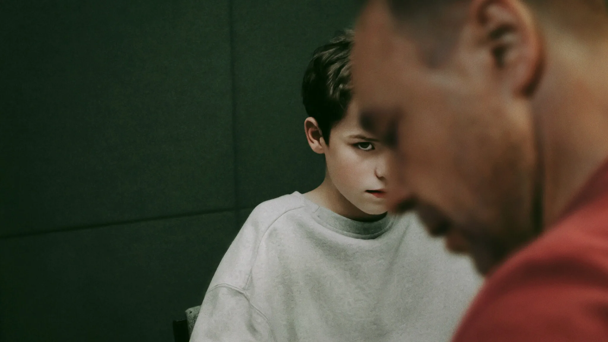

Hvad du kan forvente
Et trygt første skridt
Projektet er lavet for at forebygge misogyniske og destruktive tankemønstre gennem støtte, refleksion og tidlig dialog. Her er tonen rolig, respektfuld og uden fordømmelse.
Støtte uden fordømmelse
Vi ved, at livets udfordringer kan føles tunge. Hvis du står med ensomhed, hårde tanker, vrede, afvisning eller online fællesskaber, der trækker dig i en negativ retning, kan det hjælpe at tale med nogen. Du er ikke alene.
Hvad du kan forvente
Projektet er lavet for at forebygge misogyniske og destruktive tankemønstre gennem støtte, refleksion og tidlig dialog. Her er tonen rolig, respektfuld og uden fordømmelse.

Et alternativ
En tidlig samtale kan hjælpe med at bryde isolation, vrede og destruktive online mønstre.
Et trygt valg
Du kan starte stille. Du behøver ikke have de rigtige ord klar for at række ud.
Gratis og uden fordømmelse
Anyone. Anytime. Anonymous.
Projektet undersøger, hvordan sociale medier, algoritmer og digitale fællesskaber kan være med til at forme unge mænds selvforståelse og digitale adfærd, særligt i relation til manosfæren og incel-kulturen. The project explores how social media, algorithms, and digital communities can help shape young men's self-understanding and digital behavior, especially in relation to the manosphere and incel culture.
Med udgangspunkt i teorier om polarisering, overvågningskapitalisme og platformes rolle som aktive gatekeepere belyser projektet, hvordan bestemte forestillinger om køn, maskulinitet og fællesskab kan forstærkes online. Drawing on theories of polarization, surveillance capitalism, and the role of platforms as active gatekeepers, the project highlights how certain ideas about gender, masculinity, and community can be reinforced online.
Gennem kvalitative interviews, diskursanalyse og teori arbejder projektet med at forstå, hvordan disse miljøer opstår, spredes og normaliseres, samt hvilke konsekvenser det kan have for unge mænds identitet, adfærd og opfattelse af andre. Through qualitative interviews, discourse analysis, and theory, the project works to understand how these environments emerge, spread, and become normalized, and what consequences they may have for young men's identity, behavior, and perception of others.
Bliv klogere på projektet Learn more about the project